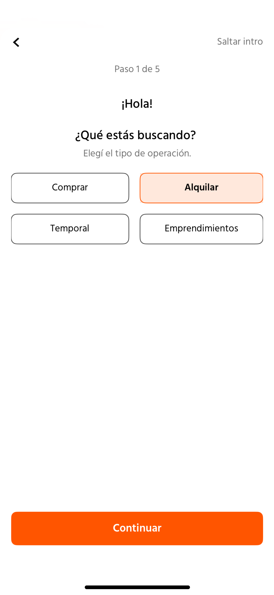
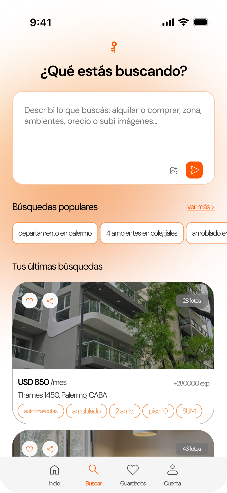
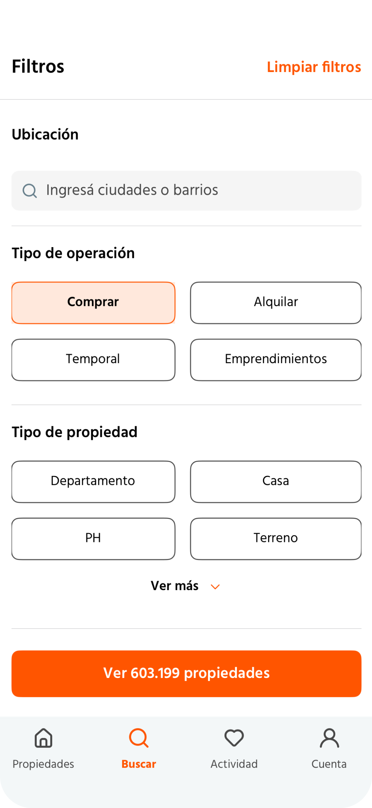
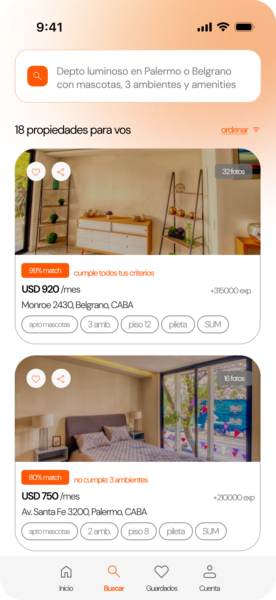
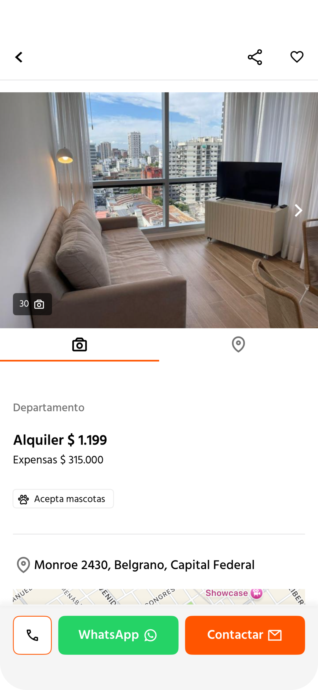
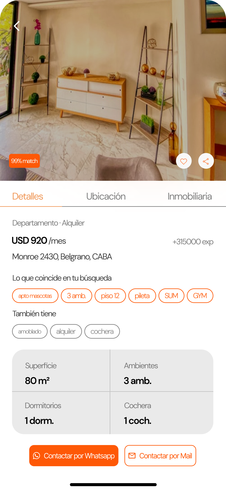
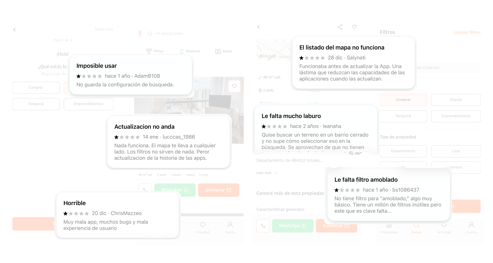

Caso de estudio — Zonaprop
En la era de la inteligencia artificial, buscar una propiedad no debería sentirse como completar formularios.
Contexto
El mercado inmobiliario necesita una nueva interfaz
Zonaprop es el portal inmobiliario más grande de Argentina.
Con millones de usuarios mensuales y miles de publicaciones activas,
el producto enfrenta un problema que pocas veces se nombra explícitamente:
la interfaz fue diseñada para un mundo anterior a la IA, y se nota.
Este ejercicio de rediseño nace de una pregunta simple —
¿cómo sería buscar una propiedad si el producto hubiera sido concebido hoy? —
y propone respuestas concretas basadas en hallazgos reales documentados
en reviews de usuarios.
01 — Onboarding
El flujo inicial obligaba a completar cinco pasos antes de poder explorar.
Esto retrasa el momento de valor y aumenta el abandono.
Decisión: eliminar el onboarding y permitir comenzar
directamente con una búsqueda en lenguaje natural.




02 — Filtros
Los filtros estaban fragmentados y repetidos, obligando al usuario
a tomar múltiples decisiones manuales.
Decisión: convertir los filtros en sugerencias
inteligentes generadas por IA según lo que el usuario escribe.
03 — Ficha
La ficha de propiedad no priorizaba lo importante, dificultando
la lectura rápida y la comparación.
Decisión: reorganizar la información destacando
imagen, precio y ubicación como primer nivel.



04 — Experiencia real
Reviews de usuarios mostraban bugs en mapa, filtros inconsistentes
y fricción en navegación.
Decisión: usar evidencia real como base del rediseño,
priorizando estabilidad y claridad.
UX
El usuario empieza desde su intención, no desde configuraciones. El primer contacto con el producto es una conversación, no un formulario.
IA
La inteligencia artificial acompaña la búsqueda en lugar de complejizarla. Traduce intención en parámetros de búsqueda de forma invisible.
Producto
Información clara y jerarquizada reduce la carga cognitiva y mejora la tasa de conversión desde listado a contacto.
"Buscar una propiedad ya no debería ser aplicar filtros, sino expresar lo que estás buscando."
Zonaprop — Concept redesign · Jimena Zapolski